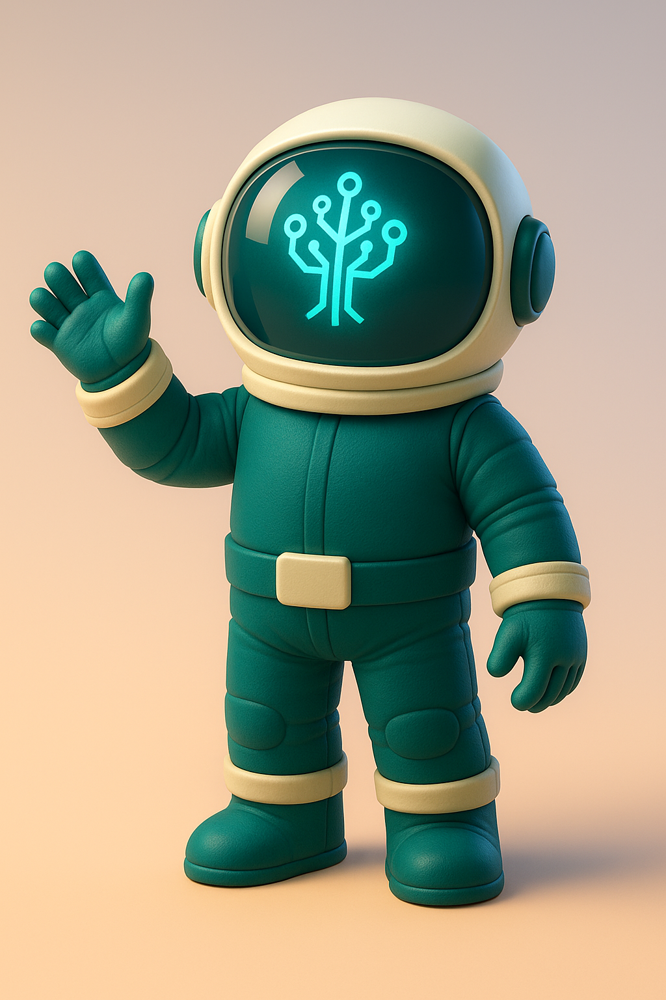
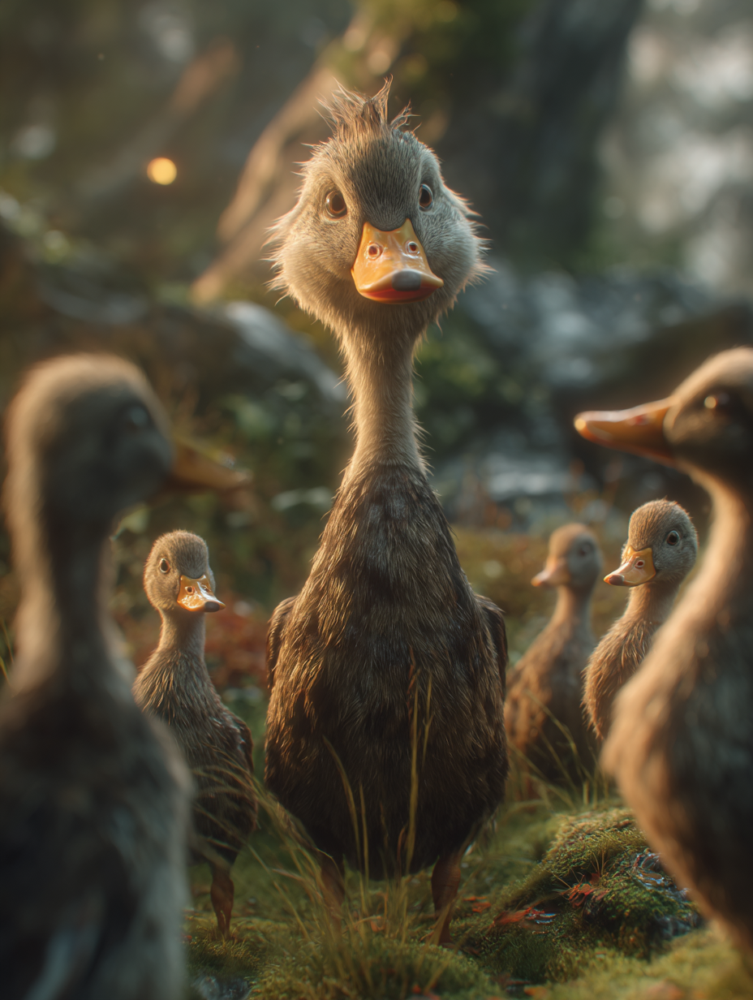
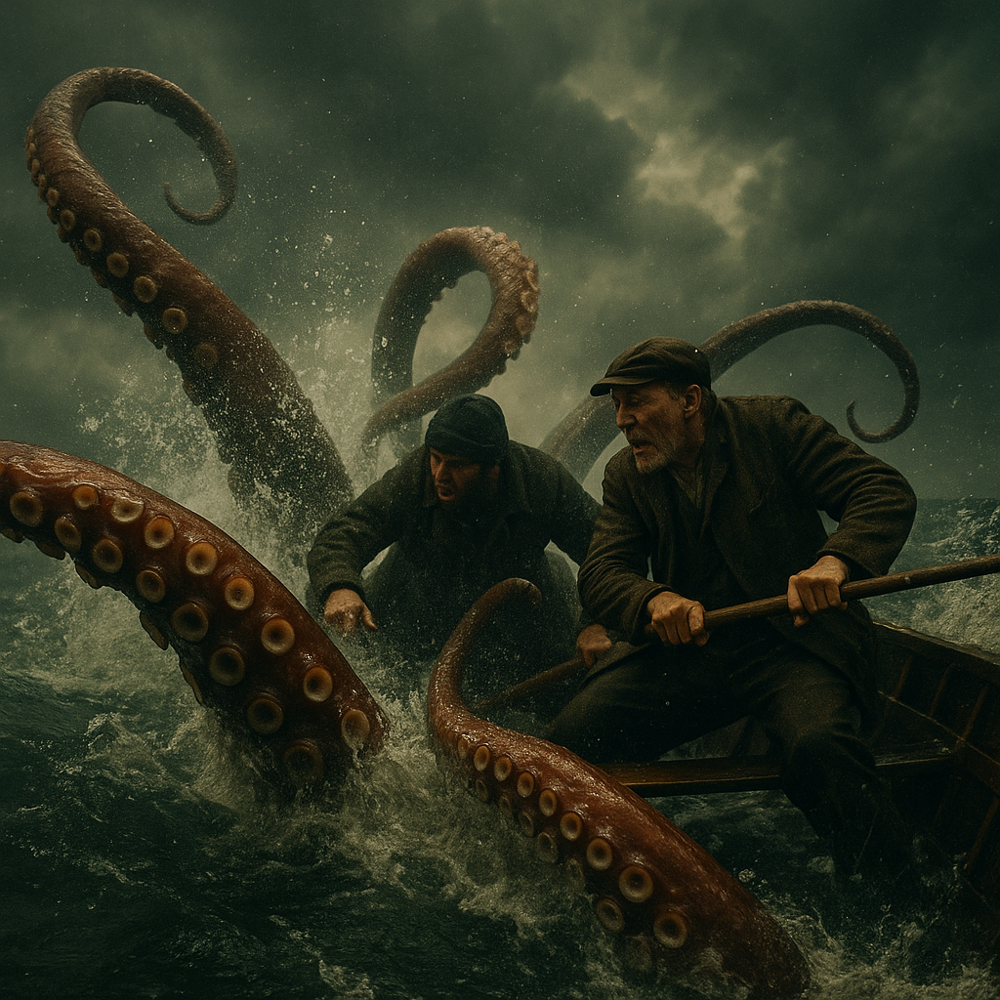

AI‑powered art, motion graphics & workflow automation that turn bold ideas into scroll‑stopping visuals and
real‑world results.
AI Videos
Prompts & Results
Avatar Prompt
"Friendly Pixar-style tech-astronaut mascot standing and waving, deep-teal spacesuit with marfil (#F6F3EE) cuffs, belt, helmet rim, chunky boots, soft rounded proportions, short limbs, plush texture, large glossy helmet visor; visor shows a glowing cyan circuit-tree icon (no human face), subtle rim-light, gentle studio key-light from camera left, shallow depth-of-field, smooth gradient backdrop in warm beige → peach, 8-k render, cinematic volumetric lighting, photoreal materials but stylised shading, highly detailed, no text, no watermark"

Fable Story Prompt
"a wide shot of a ugly grey duck being surrronded by other siblings yellow ducks that mock him, surrounded by a natural lake setting, soft morning light, photorealistic, high detail, shallow depth of field in background, wide composition, captured with 35mm lens perspective"

Realistic Story Prompt
"Sudden eruption of colossal squid tentacles lashing onto the boat, water spray frozen mid‑air, fishermen struggling, stormy sky overhead, hyperrealistic cinematic action still, vintage color grading, high‑contrast lighting"

AI Audio
Calamares gigantes
Narration of the squid-fisherman short story.
0:58
Ambient Background
Subtle music loop that underpins the story.
2:14
Daily News Podcast Talk
Quick newsletter in Spanish about the event in the world today.